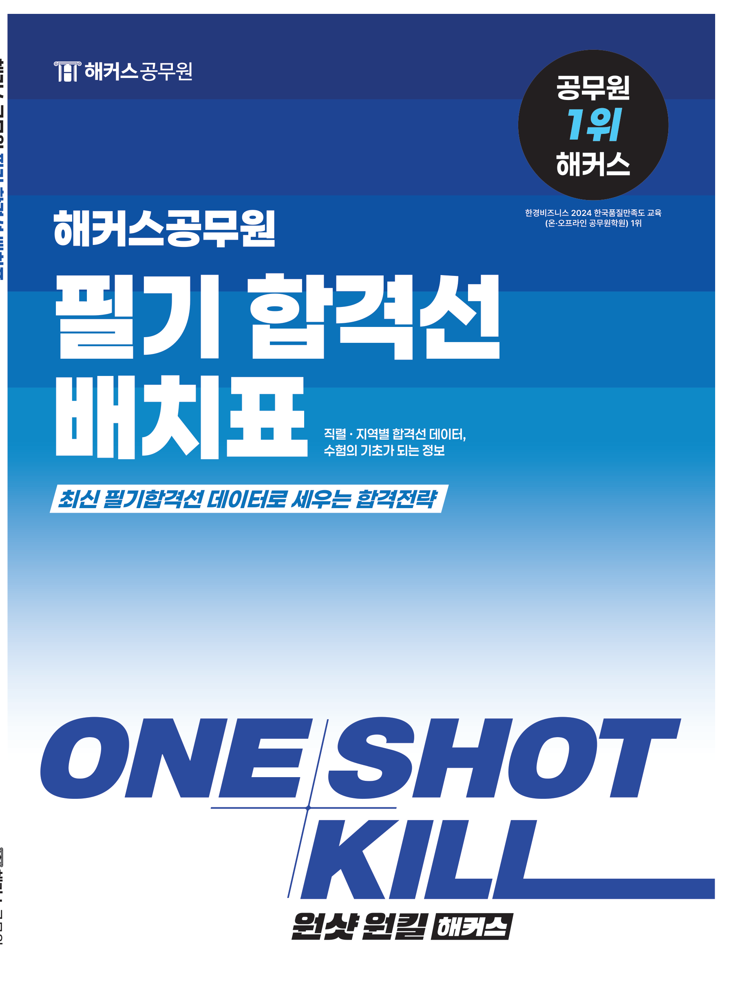

| 직렬 | ①선발 | ②출원 | ③응시 | ④응시율 | ⑤경쟁률 | ⑥합격선 |
|---|---|---|---|---|---|---|
| 일반행정 | 666 | 10,051 | 6,838 | 68% | 15.1:1 | 88 |
| 사회복지 | 121 | 1,534 | 1,129 | 74% | 12.7:1 | 81양성 78 |
양성평등 합격선 — 한 성별이 합격선에 못 미칠 때 적용되는 별도(낮은) 합격선. 위 표 사회복지 81점 → 양성평등 78점처럼 표기. 항상 일반 합격선보다 낮거나 같음.
| 구분 | 2023 | 2024 | 2025 | 2026 |
|---|---|---|---|---|
| 국가직 9급 | 6,000120,000 | 5,800110,000 | 5,500100,000 | 5,50098,000 |
| 지방직 9급 | 13,012137,466 | 11,708118,157 | 12,642107,465 | 12,500100,000 |
| 국가직 7급 | 76035,000 | 75033,000 | 70031,000 | 70030,000 |
| 지방직 7급광역시 | 15418,747 | 18616,399 | 11212,893 | 11012,000 |
| 지방 교행 | 2,53629,814 | 2,35426,524 | 1,53325,917 | 1,50024,000 |
| 시점 | 변화 내용 |
|---|---|
| ~2021년 | 9급 선택과목제 · 조정점수 적용 |
| 2022년 | 9급 선택과목 폐지 → 전 직렬 공통 필수과목 체제 |
| 2025년 | 국어·영어 출제기조 전환 — 단순 암기 → 종합사고·추론(PSAT형) · 시험시간 100분 → 110분 |
| 2027년 | 9급 한국사 폐지 → 한능검 대체 · 4과목 체제 · 과목당 25문항 지방직 7급 — 국어 대신 PSAT 도입 |
| 추진 중 | 국가직 9급 PSAT 도입 추진 — 2027년 이후 구체적 시행안 발표 예정 |
현행(2026)은 아래 ① 또는 ②를 충족하면 응시(OR). ③ 학교 요건은 2027 도입 예정(확정 전). 판단 기준은 주민등록표(전입·전출일) — 실거주·가족·부동산은 따지지 않습니다.
📌 공통 예외 — 관내 기술계고(특성화·마이스터고) 졸업(예정)자는 대부분 거주지 제한 없음. 서울시는 제한 없음(전국 응시). 지역·직렬별 제한은 다음 장.
도·시 공통 요건(①·②) 충족 시 🟢 자유 지원 지역은 내부 어디든 지원 가능. 🔴 개별 제한 시·군은 해당 시·군 거주 기록 필수.
| 시·도 | 🟢 자유 지원 (도·시 공통요건) | 🔴 시·군 개별 제한 |
|---|---|---|
| 서울 | 전국 누구나 거주지 상관없이 지원 가능 | 없음 |
| 부산 | 부산시 공통 요건 충족 시 전 지역 지원 가능 | 없음 |
| 대구 | 대구시 공통 요건 충족 시 전 지역 지원 가능 | 없음 |
| 인천 | 중구, 동구, 미추홀구, 연수구, 남동구, 부평구, 계양구, 서구 | 강화군 — 행정·사회복지·농업·보건·간호 직렬은 강화군 거주 필수(강화군 구분모집) |
| 광주 | 광주시 공통 요건 충족 시 전 지역 지원 가능 | 없음 |
| 대전 | 대전시 공통 요건 충족 시 전 지역 지원 가능 | 없음 |
| 울산 | 울산시 공통 요건 충족 시 전 지역 지원 가능 | 없음 |
| 세종 | 세종시 공통 요건 충족 시 지원 가능 | 없음 |
※ 서울교육청은 서울·인천·경기 중 한 곳의 거주 요건만 충족하면 지원 가능. 도(道) 지역은 다음 장 →
📄 증빙은 주민등록표(초본) 기준. 실거주·가족·부동산은 따지지 않음. 재외국민은 국내거소신고 사실증명.
| 시·도 | 🟢 자유 지원 | 🔴 시·군 개별 제한 (해당 시·군 거주 필수) |
|---|---|---|
| 경기 | 수원, 고양, 용인, 성남, 부천, 화성 등 28개 시 전체 | 양평군, 가평군, 연천군 |
| 강원 | 춘천시, 원주시, 강릉시, 속초시 | 동해, 삼척, 태백, 홍천, 횡성, 영월, 평창, 정선, 철원, 화천, 양구, 인제, 고성, 양양 |
| 충북 | 충청북도 공통 요건 충족 시 전 지역 지원 가능 | 없음 (단, 일부 군의회 모집 시 예외 발생 가능) |
| 충남 | 천안시, 충청남도(도청) | 공주, 보령, 아산, 서산, 논산, 계룡, 당진, 금산, 부여, 서천, 청양, 홍성, 예산, 태안 / 천안시의회, 논산시의회, 서천군의회, 태안군의회 |
| 전북 | 전주시 | 군산, 익산, 정읍, 남원, 김제, 완주, 진안, 무주, 장수, 임실, 순창, 고창, 부안 |
| 전남 | 목포, 여수, 순천, 나주, 광양 등 19개 시·군 | 완도군, 진도군, 신안군 |
| 경북 | 포항, 경주, 김천, 안동, 구미 등 15개 시·군 | 청송군, 영양군, 영덕군, 봉화군, 울진군 |
| 경남 | 창원, 진주, 통영, 사천, 김해, 밀양, 거제, 양산 | 의령, 함안, 창녕, 고성, 남해, 하동, 산청, 함양, 거창, 합천 |
| 제주 | 제주시, 서귀포시 자유롭게 지원 가능 | 없음 |
※ 교육청은 권역별 거주 제한(충남 1·2권역 등)이 2026년 전면 폐지되어 도내 자유 지원. 기술계고 졸업(예정)자·수의·연구사 등 일부 직렬은 제한 없음(공고 확인).
거주지 응시요건 강화 2027년~ · 경찰·소방 적용 2028년~ (요건 내용은 앞 장 참고)
※ 정부 발표 기준 · 세부 내용은 확정 전, 시행 시 최종 공고 확인.